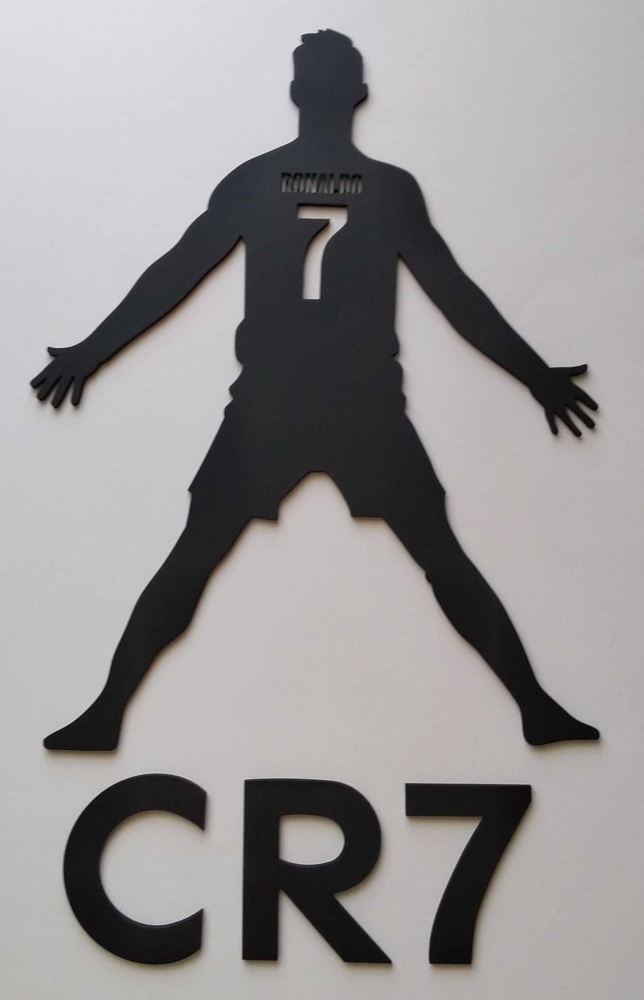
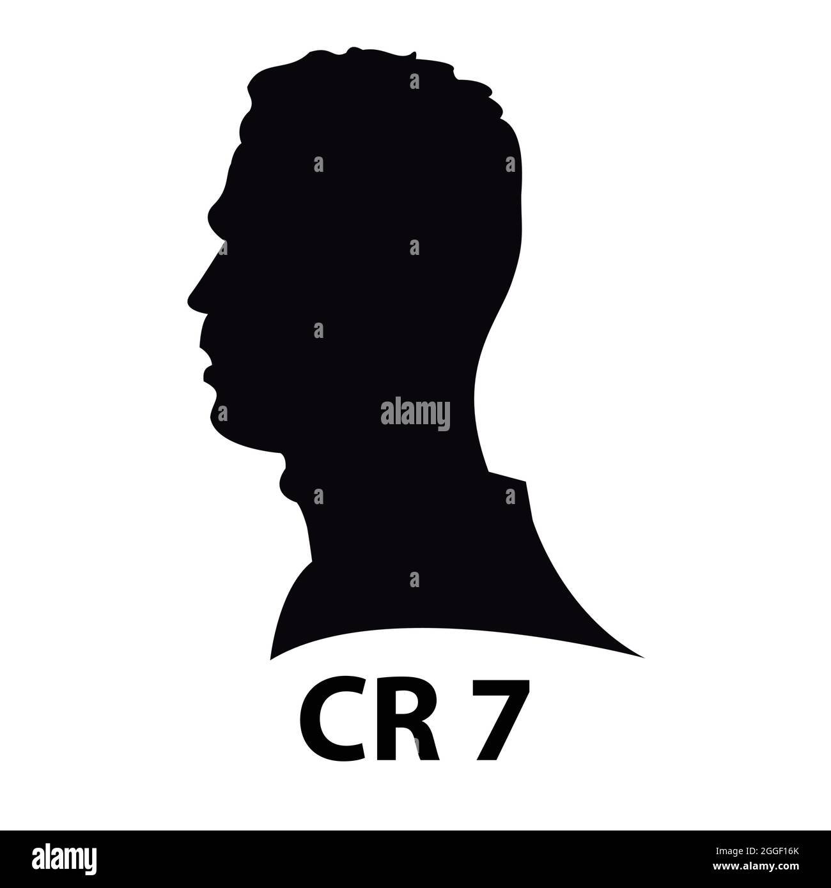
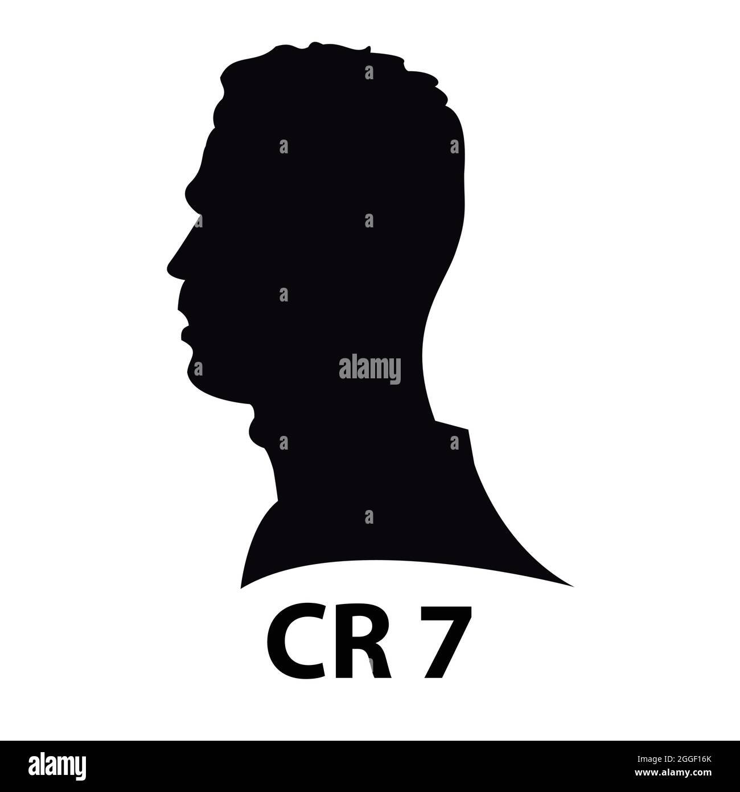
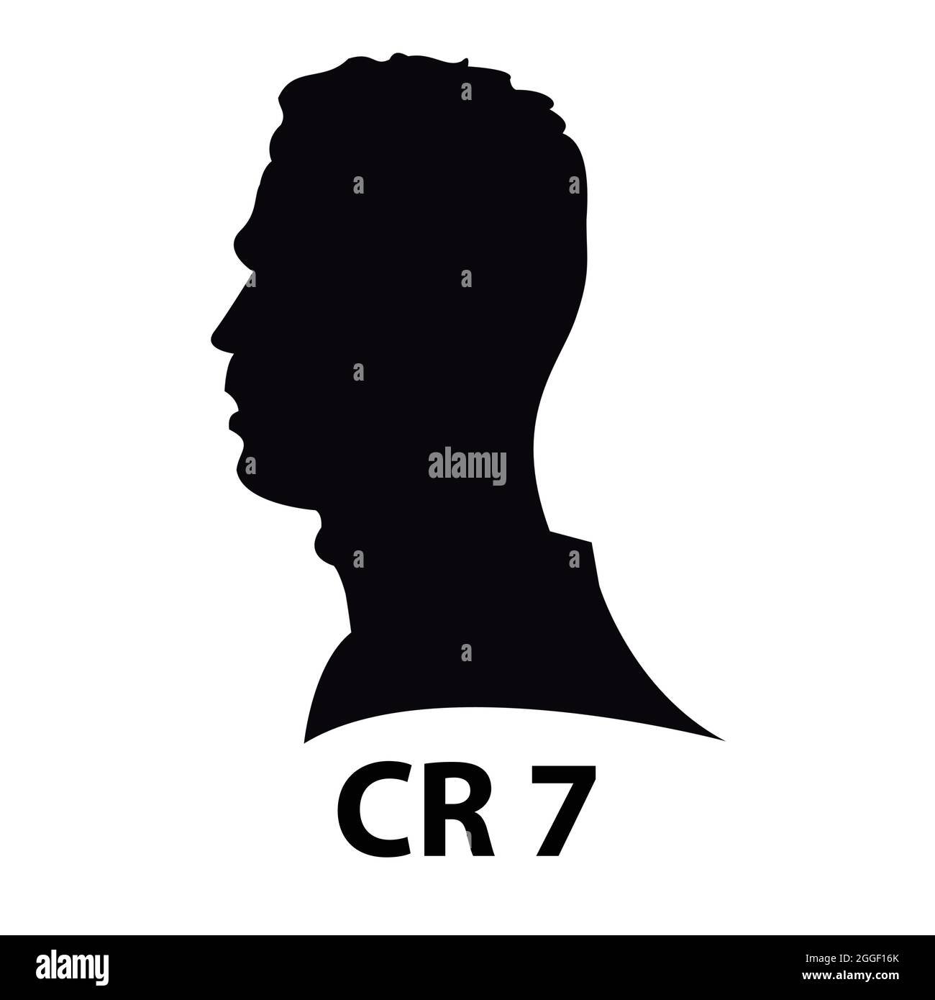
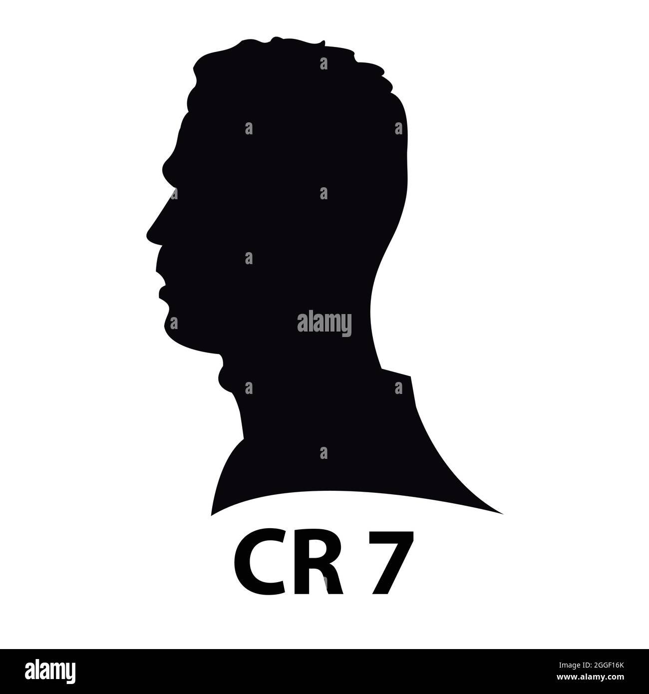

Les fans de Cristiano Ronaldo
 


🔴➡️Nouveau but de Cristiano Ronaldo en championnat saoudien🥳
15/06/2025
🔴➡️Cristiano Ronaldo a inscrit un magnifique but hier.
27/05/2025
🔴➡️Cristiano établit un nouveau record international de buts🤩🤩
27/05/2025
🔴➡️Cristiano Ronaldo a établi un nouveau record international de buts avec son but d'hier.
27/05/2025